Menu
BACCARAT:
Dealer will in order of "Player" "Banker" "Player" "Banker" deal out the cards for Player and Banker, in
case of have to draw one more card, then it will follow the table below, whoever has the total points of
9 or closes to 9 will win the hand. However, either Player or Banker has natural, then the game is over,
no more drawing.
rules
| Player first Two cards |
Player |
Banker first Two cards |
Banker |
| Total point |
Total point |
| 0 |
Draws card |
0 |
Draws card |
| 1 |
Draws card |
1 |
Draws card |
| 2 |
Draws card |
2 |
Draws card |
| 3 |
Draws card |
3 |
If player draws a 8, then no need to draw card |
| 4 |
Draws card |
4 |
If player draws a 0,1,8 or 9, then no need to draw card |
| 5 |
Draws card |
5 |
If player draws a 0,1,2,3,8 or 9, then no need to draw card |
| 6 |
No need to draw card |
6 |
If player draws a 6 or 7, Draws card |
| 7 |
No need to draw card |
7 |
No need to draw card |
| 8 |
Natural |
8 |
Natural |
| 9 |
Natural |
9 |
Natural |
Baccarat
| Type |
Odds |
Condition of winning |
| No Commission banker |
1:1 |
After cards dealt, Banker has a higher hand (Receive 0.5 times payout when banker wins with 6
points.Return all bet when the result is tie)
|
| Banker |
1:0.95 |
After cards dealt, Banker has a higher hand |
| Player |
1:1 |
After cards dealt, Player has a higher hand |
| Tie |
1:8 |
After cards dealt, Player and Banker have the same hand,Tie return bet amount. |
| Banker Pair |
1:11 |
Banker first two cards are the same, Non-suit |
| Player Pair |
1:11 |
Player first two cards are the same, Non-suit |
| Big |
1:0.5 |
After cards dealt, Player and Banker have a total of 5 or 6 cards
(
Big bets are not accepted after 30 games of every dealing shoe.)
|
| Small |
1:1.5 |
After cards dealt, Player and Banker have a total of 4 cards
(
Small bets are not accepted after 30 games of every dealing shoe.)
|
| lucky6 |
1:12/1:20 |
1:12 (If Banker wins with 6 points and no third card is drawn.)
1:20 (If Banker wins with 6 points and third card is drawn.)
|
Note:
- This web site is live gaming; under no circumstances our management decision is final and
official.
- During shuffle time, if there is a card falls off the table or out of camera supervision, then the
immediate supervisor will get a new shoe of card to replace, and re-shuffle.
- During cards dealt, if the dealer accidentally draws out 2 or 3 faced-down cards, then the
immediate supervisor will put them in sequence position.
- In case of over drawn card, the card (over drawn) will be placing under the shoe box and will be
using as burn card for next game and the current game continue as normal.
- In case of dealer forget to burn card and two or more cards are faced up (can see the face of the
card), the game will be canceled and change to new boot.
- During the game, if there is a faced-up card found in the shoe box, then that card and all the bets
are considered as valid and continue the game as normal. But if the game has offered for insurance,
then the insurance consider void.
- During the game, If dealer forget offer insurance and dealer scanned the next card and exposed the
card, we will void the insurance and the game will be continue as normal.
- During the game, If dealer forget scan the card and caused the scanned card result in wrong
position, we will re arrange the initial card in player and banker, and void insurance. The game
will be continued as normal.
Online Casino will try all the best to avoid any mistakes during the game, and appreciate your patience
cooperation.
DRAGON TIGER:
Dragon Tiger is the easiest card game in the casino. The dealer deals two cards each game, one for the Banker
(Dragon) and one for the Player (Tiger). Simply makes a bet to Dragon or Tiger which could draw the highest
card.
| Type |
Odds |
Condition of winning |
| Dragon |
1:1 |
Dragon is first card of Player and the point is bigger |
| Tiger |
1:1 |
Tiger is first card of Banker and the point is bigger |
| Tie |
1:8 |
After cards dealt, Player and Banker have the same hand |
| Dragon Odd |
1:0.75 |
Dragon is first card of Player and the point is bigger |
| Dragon Even |
1:1.05 |
Dragon is first card of Player and the point is bigger |
| Dragon Red |
1:0.9 |
Dragon is first card of Player and the point is bigger |
| Dragon Black |
1:0.9 |
Dragon is first card of Player and the point is bigger |
| Tiger odd |
1:0.75 |
Tiger is first card of Banker and the point is bigger |
| Tiger Even |
1:1.05 |
Tiger is first card of Banker and the point is bigger |
| Tiger Red |
1:0.9 |
Tiger is first card of Banker and the point is bigger |
| Tiger Black |
1:0.9 |
Tiger is first card of Banker and the point is bigger |
RULES:
Each shoe above 30 Bureau, do not accept single and double red and black bet.
Dragon is first card of Player. Tiger is first card of Banker.
Card from the smallest to the biggest are (ignoring the symbols):A ,2,3,4,5,6,7,8,9,10,J,Q and K.
Paid for both Dragon and Tiger is 1:1 and for Tie is 1:8.。
For Tie, betting on the Dragon and Tiger will lose half of the valid bet.
NOTE:
This web site is live gaming; under no circumstances our management decision is final and official.
During shuffle time, if there is a card falls off the table or out of camera supervision, then the immediate
supervisor will get a new shoe of card to replace, and re-shuffle.
During cards dealt, if the dealer accidentally draws out 2 or 3 faced-down cards, then the immediate
supervisor will put them in sequence position.
In case of over drawn card, the card (over drawn) will be placing under the shoe box and will be using as
burn card for next game and the current game continue as normal.
In case of dealer forget to burn card and two or more cards are faced up (can see the face of the card), the
game will be canceled and change to new boot.
During the game, if there is a faced-up card found in the shoe box, then that card and all the bets are
considered as valid and continue the game as normal.
ONLINE CASINO WILL TRY ALL THE BEST TO AVOID ANY MISTAKES DURING THE GAME, AND APPRECIATE YOUR PATIENCE
COOPERATION.
ROULETTE:
Game Overview:
This game is European style single zero roulette. There are 37 coloured and numbered pockets on the wheel.
There is a green pocket numbered and the other pockets of the roulette wheel are numbered from 1 to 36. In
number ranges from 1 to 10 and 19 to 28, odd numbers are red and even are black. In ranges from 11 to 18 and
29 to 36, odd numbers are black and even are red. In the game, players may choose to place bets on either a
single number or a range of numbers, the colors red or black, or whether the number is odd or even.
How to Win:
After the bet is over, the dealer will rotate the wheel in one direction and throw the ivory ball on the
outside of the wheel so that the ball is in the wheel for at least five weeks for the active game and landed
A trench for the results of the council, if the ball, but five weeks the scene will be re-start the
ball.
Participation Instructions and Bet Options:
1.When a game starts, you can choose the chips to place the bet based on your guess the number or the other
betting types in roulette table. The betting process is terminated after the countdown end.
2.When the countdown is end, dealer spins a wheel in one direction, and spins a ball in the opposite
direction around a tilted circular track running around the circumference of the wheel.
3.After the ball falls on one pocket, dealer will input the result number and the payoff will be displayed in
players' tables.
Game Rule::
The chips are placed on the different bet grids , and you can bet on any grids during the betting time.
Payoff:
There are 12 betting types in roulette game, and the following are betting types and payoff:
| BETTING TYPES |
EXPLANATION |
Odds |
| Direct |
Bet is placed on a single number (included 0). The chip is placed entirely on the middle of a number
square
|
1 ：35 |
| Separate |
Bet on two adjoining number, either on the vertical or horizontal (as in 2-3). The
chips is placed on the line between these numbers.
|
1 ：17 |
| Street |
Bet on three different numbers with the same bet. The chips is placed the outside of the row of
numbers on the edge that you want to bet on. (as in 1, 2, and 3 all at once) put your chips on the
line that is the outside edge of the 3.
|
1 ：11 |
| Three Numbers |
Bet on the intersecting point between 0,1 and 2, or 0,2 and 3 |
1 ：11 |
| Triangle |
Bet on four numbers in a square layout (as in 11-12-14-15). The chip is placed at the horizontal and
vertical intersection of the lines between the four numbers.
|
1 ：8 |
| Four Numbers |
a bet on 0, 1, 2, and 3
|
1 ：8 |
| Line |
Bet on any six numbers from two horizontal rows (as in 1-2-3-4-5-6 or 28-29-30-31-32-33, etc) |
1 ：5 |
| Row |
Bet covers 12 numbers except number zero (as in:
1st Row: 1-4-7-10-13-16-19-22-25-28-31-34
2nd Row: 2-5-8-11-14-17-20-23-26-29-32-35
3rd Row: 3-6-9-12-15-18-21-24-27-30-33-36)
|
1 ：2 |
| Dozen |
Bet on the first 12 numbers
(as in: 1st 12: 1-12
2nd 12: 13-24
3rd: 25-36) |
1 ：2 |
| Red / Black |
Bet on which color the roulette wheel will show. If show zero mean all lost |
1 ：1 |
| Odd / Even |
Bet on an even or odd nonzero number. If show zero mean all lost. |
1 ：1 |
| Big / Small |
Small (as from number 1 to 18) ; Big (as from 19-36)；If show zero mean all lost. |
1 ：1 |
French bets:
French bets: There are different number series in roulette that have special names attached to them
(such as the third cylinder, neighbors of zero and so on), and each covers a section of the wheel. There are
5 betting types in the French bets.
Bet method：Bet on elliptical roulette table, and show the chips on another roulette table. And then,
click "sure" to confirm your bets .
|
BETTING TYPES
|
EXPLANATION |
PAYOFF |
| zero |
7 |
Straight note：0 ； 3； 12 ； 15； 26； 32 ； 35 |
| neighbors of zero |
17 |
Straight note：0; 2; 3; 4; 7; 12; 15; 18; 19; 21; 22; 25; 26; 28; 29 ; 32; 35
|
| orphans |
8 |
Straight note：1；6；9；14；17；20；31；34 |
| the third cylinder |
12 |
Straight note：5；8；10；11；13；16；23；24；27；30；33；36 |
Attention :
• Minimum and maximum bets are based on table limits. Player can place bets within the combined range of the
table's playtype bet limit and the player's personal bet limit. If you would like to adjust your personal
bet limits' please contact customer services.
• When the ball are thrown out the roulette wheel by the dealer or the roulette wheel stops in game, this
game will be restarted. In case of the failure factors, all the bets and payoff will be canceled.
• In case of incorrect settlement, settlement will be re-settled based on current video result.
SIC BO:
The SicBO is also called Big /Small bet, an old Chinese game passed from generation to generation.
The game tool is a sealed dice cup inside which 3 dices are placed. Each player choose the bet to
place, then guesses the total points expressed by the dices after being shaken by the machine.
PLAYING METHOD
- Upon the start of the new game, the time countdown for placing the bests is started. You can
choice the chips to place the bet based on your guess.
- The betting process is terminated after the time countdown ends; the banker starts the button
then rolls the dices automatically by the machine.
- After the dice cup stop running , the banker enters the three points depends on the total points
of the three dices stopped , and the screen is illuminated with the lights, which allows a clear
view of the winning bets and the loss odds ; the result is determined by the player's betting.
- If the dices lean on the rim of the dice cup or overlapping dices disable the reading of the
dice points, the affected round and all of its wagers will be considered void and all wagering
amount will be refunded, and new round will be started.
- If there are fewer than three beatings, the dealer will be shaken.
BET TYPES
- The chips are placed on the different bet grids , and you can bet on any grids during the
betting time.
PAY OFF
| BET OPTION |
EXPLANATION |
ODDS |
| Big/Small |
Big: Total points of dices are 11 to 17 Note: In the event that any triple comes out;
all bets wagered on the portion loses.
Small: Total points of dices are 4 to 10 Note: In the event that any triple comes out; all
bets wagered on the portion loses.
|
1:1 |
| Specific Triples |
Bet on the three dices will drop out three identical figure, must be a specific figure (ex.
three 6's).(PS* In the event that any triple comes out; all bets wagered on this portion
loses.)
|
1:180 |
| Any Triple |
3 Bet on all six triplets at once. |
1:30 |
| One of A Kind |
| One Dice |
Bet on a dice figure that must come out on one dice (choose from dice 1 to 6). |
1:1 |
| Two Dice |
Bet on a dice figure that must come out on two dices (choose from dice 1 to 6). |
1:2 |
| Three Dices |
Bet on a dice figure that must come out on three dices (choose from dice 1 to 6). |
1:3 |
| Specific Double |
投Bet on specific pair of dice that must come out. |
1:10 |
| Two Dice Combination |
Bet on specific two dice combination. There are 15 types of two dice combination on the
table layout.
|
1:5 |
| Sum of Points |
| 4 or 17 Points |
Total of 4 or 17 |
1:60 |
| 5 or 16 Points |
Total of 5 or 16 |
1:30 |
| 6 or 15 Points |
Total of 6 or 15 |
1:17 |
| 7 or 14 Points |
Total of 7 or 14 |
1:12 |
| 8 or 13 Points |
Total of 8 or 13 |
1:8 |
| 9,10,11,or 12 Points |
Total of 9 ,10,11,12 |
1:6 |
| Odd / Even |
| Odd |
Total points are 5,7,9,11,13,15,17
Note: In the event that any triple comes out; all bets wagered on the portion loses.
|
1:1 |
| Even |
Total points are 4,6,8,10,12,14,16
Note: In the event that any triple comes out; all bets wagered on the portion loses.
|
1:1 |
EXPLANATION
- Malfunction Voids All Pays and Play
- The RTP% for this game is 95.52% based on live data.
Baccarat Good Road Manual:
Road 1
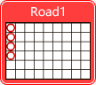
Definition: In the Big Road appear consecutive with 4 red circles or above.
Example:
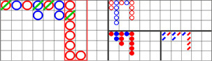
Road 2
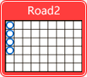
Definition: In the Big Road appear consecutive with 4 blue circles or above.
Example:
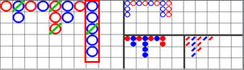
Road 3
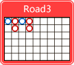
Definition: In the Big Road, appear 1 blue 2 red repeatedly.
Example:
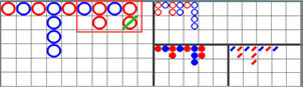
Road 4
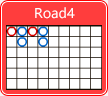
Definition: In the Big Road, appear 1 red 2 blue repeatedly.
Example:
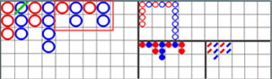
Road 5
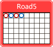
Definition: In the Big Road, each column equally appear 1 red 1 blue or 1 blue 1 red.
Example:
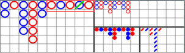
Road 6
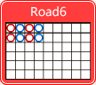
Definitions: In the road way, the two free chain chase appear Zhuang, (beginning Zhuang Any Player) 4 or
more times or four times, it is called "double jump road."
Example:
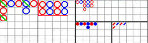